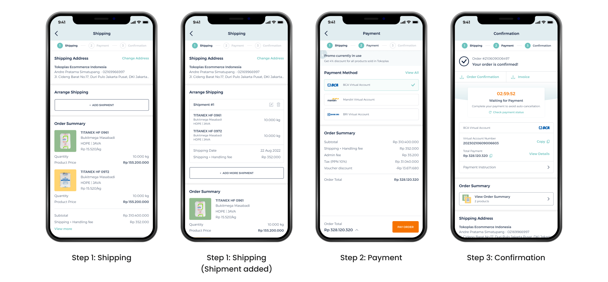
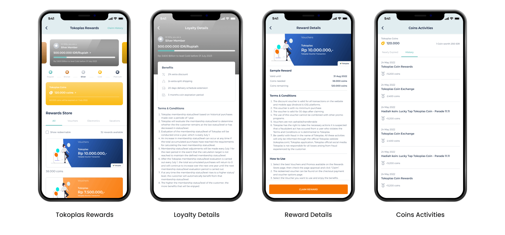

Timeline
4 months

Tokoplas is the first B2B petrochemical marketplace in Indonesia with a focus on polymer-based resin. Newly established in 2019, Tokoplas aims to connect all the business processes and market players including suppliers, customers, and partners under one single e-commerce platform.
As a sole product designer, I was tasked with redesigning the entire Tokoplas app and creating a seamless browsing and purchasing experience. My key contributions include gathering project requirements, conducting interviews and usability testing, refining user flows, creating visual mockups, validating and iterating on design solutions, and handing off assets to developers.

Problem
Tokoplas has already redesigned their website. However, the overall navigation flow and branding are inconsistent while some features are still lacking compared to the website version. As such, customers do not feel the benefits in using the Tokoplas app.
Outcome
Enable user to use and invest more on Tokoplas app by making them feel efficient, appreciated, and delighted by the new app version.
Solution
We do a major revamp on the product listing, checkout, and order history pages so that users can easily browse for products, make purchase, and track order status. Also adding some new features and functions for certain pages so users can truly experience the benefits of using Tokoplas app.
Goal
We want to innovate and improve Tokoplas app in order to increase conversion, retention, and user satisfaction rate.
This is the design before we started the project. What I found when I visit the current app design were the information is difficult to digest because of the poor visual hierarchy, inefficient use of white space, and lack of usability.

To understand more about this project, we conducted user interviews and usability testing with a focus on general knowledge of the core features and usability of the current design.
From the interviews and usability testing that has been conducted, we found a number of user pain points such as:
From the interviews conducted, we got several user motivations that drive users to use the Tokoplas app as opposed to the website version. This is one of our bases in designing the new Tokoplas app.

We also collect intentions from business and product stakeholders so that we can align with the company's vision, while we get the user's intention by analysing research data.

From the research, data collected, and intentions carried out, we identify opportunities in our design using the HMW framework:
How Might We
We broke up the checkout process from 2 to 3 steps to minimize user scrolling. Now each step has only one main action to complete to make it easier for users to achieve their goal and reduce information overload. We also added breadcrumbs to give users a clear sense of progression of their checkout process.
Many users have difficulty getting clear information about what categories level they are at, what filters are being applied, how many products are displayed. So, I made improvements to Tokoplas product listing page with the focus on letting users know about their categories level, filters, and products displayed.
In this design, users are able to clearly see the categories level they are at directly in the header (PE > HDPE > Film). How many filters applied are indicated with the number inside green circle and current filter state is shown with visual confirmation of active product filters. Users can also see the total products that will be displayed when choosing filters to apply.

Users can easily see all the list of order history by tapping the Order History menu in the bottom navigation bar rather than going inside the Account menu. Search bar and date filter are added to give users flexibility in checking orders based on their needs. Each delivery status has unique color code to help users to quickly identify the delivery status and minimize memory load.

Through this loyalty program, we want to reward our users with valuable benefit to increase retention rate. Each user will feel the difference between tiers through the different color of the tier card at each level. Users can see the total coins owned and which will expire more clearly. Users can also view their progress to move to the next tier, and most importantly, they can see the rewards they can redeem directly on the landing page.
There are 5 tiers of loyalty level starting from regular, bronze, silver, gold, to platinum. The benefits they can get are like discounts, free shipping, extended coin expiration period, and exclusive vouchers. This benefits varies based on their tier. They can see the details of the benefits on the Loyalty Details page.
Users can get Tokoplas Coins by making transactions at Tokoplas platforms. The coins earned by the user can be collected to be exchanged for a reward on the Rewards Store section. Now on the Coins Activities page, users can see their active coins, conversion of Tokoplas Coins values to IDR, coins that will expire, and their coin transaction history. We also provide notifications via push notifications to remind them when a coin will expire in the near future.
The previous design didn't have tracker we can track to gather the statistical significance to validate the success of the new design. However, we're continuing to get feedback from users and iterate on the designs to improve the user experience.
Outcomes
Learnings